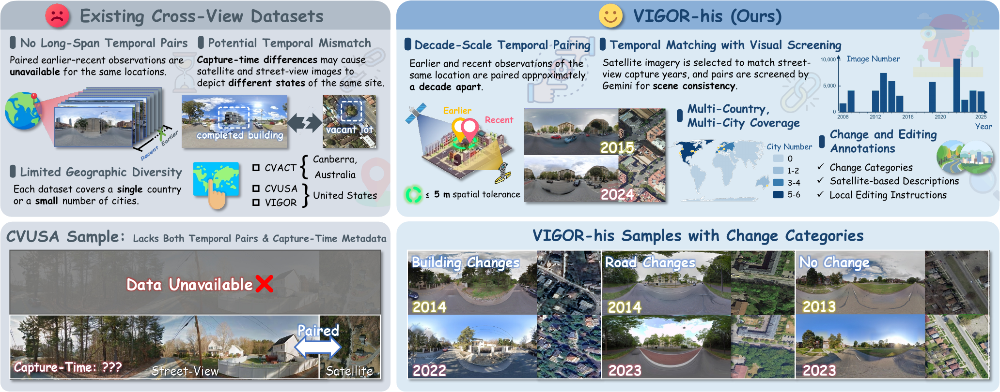

Edit with recent views
Recent street views provide a visual reference that constrains viewpoint and persistent scene appearance.
Historical street-view generation
A Decade-Spanning Cross-View Dataset and Reward-Guided Editing for Historical Street-View Generation
1 Sun Yat-sen University
* Equal contribution † Corresponding author

VIGOR-his pairs earlier and recent cross-view observations and provides structured change annotations for historical street-view generation.
Historical street-view imagery records urban evolution, but uneven coverage leaves substantial gaps in historical records. Generating plausible past appearances requires restoring changed structures while preserving persistent scene content.
We construct VIGOR-his, a decade-spanning cross-view dataset containing 43,653 location-level quadruplets across 11 cities on three continents. Based on VIGOR-his, we propose CrossTimeEdit, a model that reformulates historical street-view generation as editing, using recent street views to constrain viewpoint and unchanged appearance and temporal satellite differences as change evidence.
CrossTimeEdit improves overall performance across three street-view editing criteria by 17.12% over the pretrained baseline, ranks first among evaluated open-source image editing models, and outperforms cross-view generation models in scene consistency, visual realism, and perceptual quality.
Recent street views provide a visual reference that constrains viewpoint and persistent scene appearance.
Satellite differences provide change evidence and local editing instructions for the earlier scene.
Instruction Alignment, Background Preservation, and Quality and Physical Plausibility guide training and evaluation.
43,653
location-level quadruplets
11
cities
3
continents
~10 years
temporal span
@misc{lu2026crosstimeedit,
title = {CrossTimeEdit: A Decade-Spanning Cross-View Dataset and Reward-Guided Editing for Historical Street-View Generation},
author = {Lu, Hanwen and He, Jun and Yang, Mingjia and Wei, Hao and Huang, Jinhao and Lin, Yi and Zhang, Xiang},
year = {2026},
note = {arXiv preprint}
}